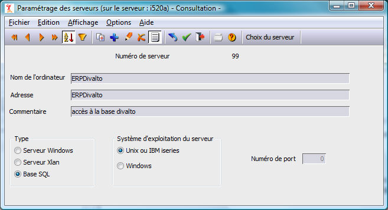
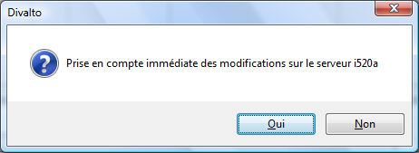

Il convient de configurer la ou les bases SQL à deux endroits :
Dans la table des serveurs du serveur IBM i. Ce paramètre sera utilisé par XLAN.
Dans la table des serveurs du poste client servant à l'installation. Ce paramètre servira à l'utilitaire de paramétrage XPSQL qui s'exécute sur le poste client.
Dans la table des serveurs du serveur IBM i.
Sur le serveur, pour que XLAN puisse accéder à la base SQL, on crée une entrée de type « BaseSQL » dans la table des serveurs par le choix "Serveurs" du menu "Paramétrage" de Harmony.dhop. Il convient de sélectionner le serveur par le bouton "Choix du serveur".
On garnira les champs suivants :
Nom de l'ordinateur: C’est le nom de la base SQL. Par exemple ERPDivalto. Ce nom servira de chemin pour accéder au serveur SQL depuis le poste client. (Voir Chemins implicites).
Adresse: C'est le nom de la base de donnée du serveur SQL. Il prend la même valeur que le paramètre Nom de l'ordinateur.
Chemin SQL : (facultatif) Chemin Harmony ou se trouve le répertoire contenant les dictionnaires ainsi le fichier paramètres FHSQL.dhfi de la base. Exemple : /divalto/bases/erpdivalto.
Si non renseigné, le chemin est /divalto/"nom de la base".
Type: doit être positionné à la valeur Base SQL.
Système d'exploitation: Unix ou IBM iSeries

A la fin du paramétrage, une fenêtre demande la confirmation de la prise en compte immédiate des modifications sur le serveur.
Ceci a pour effet de mettre à jour la table des serveurs dans la mémoire du serveur IBM i. En cas de réponse négative à cette question, il faudra redémarrer le travail XLAN pour que la modification soit prise en compte. (ou effectuer un nouveau passage en modification de la table des serveurs et répondre par l'affirmative à la question).

Dans la table des serveurs du poste client servant au paramétrage du serveur.
Le bouton "Local" de la fenêtre "Choix du serveur" permet de configurer la table des serveurs du poste local.
On créera une entrée identique à celle de la table des serveurs du serveur IBM i sur le poste local servant au paramétrage du serveur.